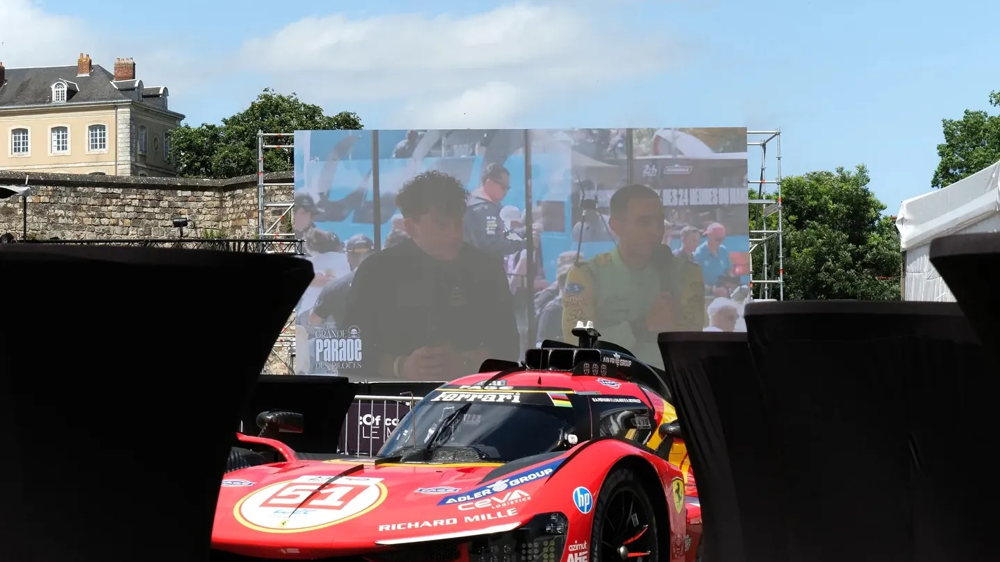
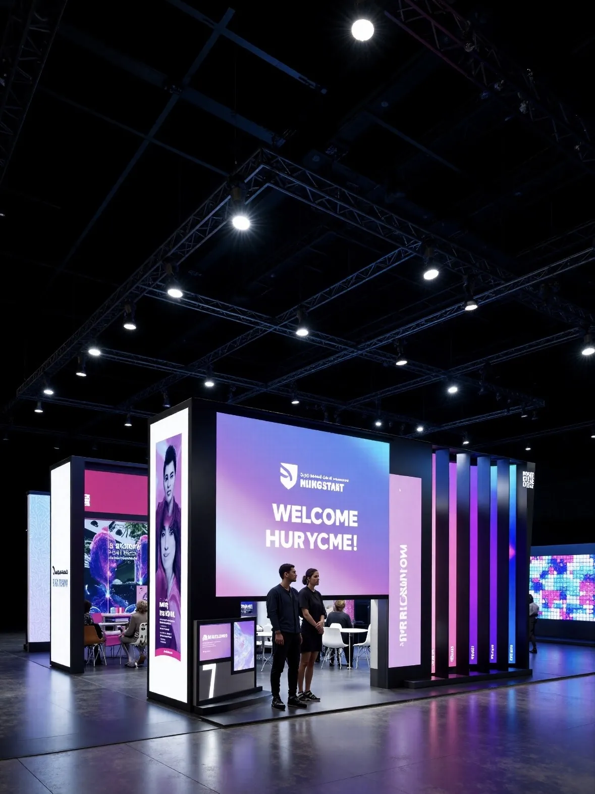
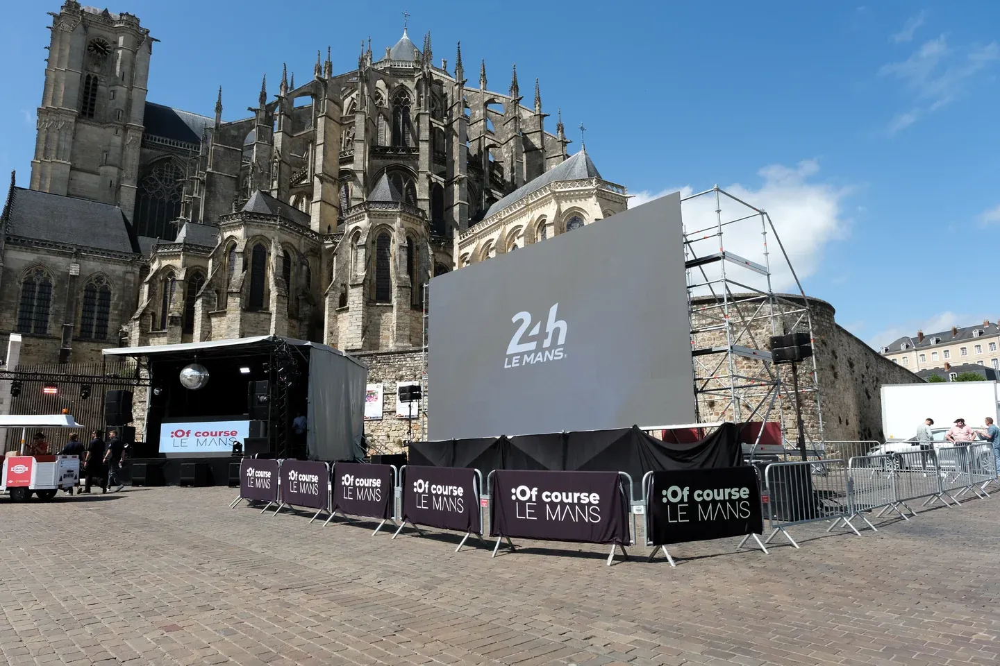

By David
What is an all-in-one LED display? An all-in-one LED display is a finished meeting-room screen that integrates the LED panels, power and control in one unit, so it hangs or stands like a large display instead of being built cabinet by cabinet. In a boardroom or conference room it is the option to consider when you want a seamless LED image without assembling a full video wall.
This guide explains how an all-in-one works, what to look for in a meeting-room purchase, and which published sizes fit which rooms. For how to size any conference screen from the back row — including a custom video wall — use the conference room size guide. To compare all-in-one screens with LCD panels, see the all-in-one conference display buyer guide.
On Asia Vision's COB All-In-One Solution, the display and the control functions sit in one LED screen, aimed at conference rooms, TV studios, schools and training rooms. Flip-chip COB modules, an Android control system with a reserved OPS host interface, infrared touch, wireless projection and 4K HDR playback are combined in three overall sizes: 81, 108 and 135 inch, on the CV-PRO 0.93 / 1.25 / 1.56 module platform.
| Option | What it includes | Best for |
|---|---|---|
| All-in-one LED | Integrated panels, power and control in a fixed overall size | Boardrooms and meeting rooms that match a standard size |
| LED video wall | Separate cabinets, processor and control | Custom openings and larger spaces |
| Large LCD | A single panel, usually with its own control | Smaller rooms where a seam-free LED image is not required |
| Projector | A separate screen or wall surface | Flexible rooms where the display is not always in use |
The all-in-one path simplifies installation and day-to-day use. A built-up video wall remains the better fit when the wall opening does not match one of the published overall sizes, or when the room needs a custom aspect ratio.
Figure 1 shows an indoor LED installation.

Buyers searching for an all-in-one direct-view LED display for a meeting room should treat features as a specification list, not a brochure tour. The published COB All-In-One Solution includes:
Keep the control simple. Users who are not technicians should be able to share a laptop and join a call without help. If the IT team needs remote management, confirm that on the quotation rather than assuming it is included.
Screen size still starts from the room and the furthest viewer, as explained in the conference room size guide. A screen that is too small is hard to read from the back; one that is too large overpowers the room.
The COB All-In-One Solution is published in three overall sizes, not a 108-to-220-inch range:
| Overall size | Module platform | Recommended room area |
|---|---|---|
| 81 inch | CV-PRO 0.93 (0.9375 mm) | 30–60 m² |
| 108 inch | CV-PRO 1.25 | 50–80 m² |
| 135 inch | CV-PRO 1.56 (1.5625 mm) | 60–100 m² |
If the room is larger, or the wall opening does not match these sizes, specify a custom indoor wall instead — M-PRO for a 16:9 SMD/GOB cabinet, or COB CV-PRO for an ultra-fine-pitch indoor wall. Send the room dimensions if you want the size and pitch checked before you order.
Figure 2 shows an indoor LED installation.

Meeting content is often detailed — slides, spreadsheets and documents — so sharpness matters. Choose the pitch for the closest reading distance, as set out in the fine pitch buying guide. The three published all-in-one sizes already pair a pitch with each overall size (P0.93, P1.25 and P1.56). For a custom wall, set the pitch from the nearest seat rather than buying a finer pitch than anyone will see.
An all-in-one installs on a wall or a stand and is typically faster to commission than a cabinet-by-cabinet video wall, because the control is already integrated. Confirm mounting, power, network and whether the wall can carry the unit before delivery.
Plan the room as a system: booking, lighting, audio and, for hybrid rooms, the camera position. The published specification lists interfaces including HDMI, USB, a 100 Mbps network port, an OPS host interface and RS232. Confirm which of those the room will actually use, and whether external speakers are needed in a larger space even though 3.5 mm audio is built in.
The all-in-one offers a seamless LED image that a tiled LCD wall cannot, and the brightness and contrast that a projector often cannot hold in a lit meeting room. A large LCD still suits a small room where a standard panel is enough. A projector suits a flexible room that does not need a permanent display. A custom LED video wall suits a space that needs a size or shape the three published all-in-one sizes cannot fill.
Cost and maintenance differ too. An LED all-in-one has no projector lamp to replace. A custom wall has more components to service. Weigh the whole life of the room, not only the screen price, and plan for software updates on the Android system and any OPS host. See the software license guide for update and licence questions.
Write the specification around the room: overall size or custom width and height, pitch, wireless projection, control, audio, and any camera or conferencing peripherals. Include power, network and mounting so the room is ready when the screen arrives.
Asia Vision warrants LED display systems for three years. The all-in-one V5.1 datasheet itself does not state a warranty period, so confirm the cover for the screen and for any OPS or conferencing accessories on the quotation. The warranty guide sets out what to review in the terms.
If the three published sizes do not fit, or you want the pitch and features checked against a floor plan, contact us with the room dimensions and the content you will show.
For a standard-size meeting room, start with the COB All-In-One Solution (81, 108 and 135 inch). If the opening needs a custom video wall, see the M-PRO series (16:9 SMD/GOB indoor) and the COB CV-PRO series (ultra-HD indoor fine pitch).
Tell us your room and content, and we will advise on the all-in-one LED screen, size, and features for your meeting room.
Request Conference SpecChat on WhatsApp